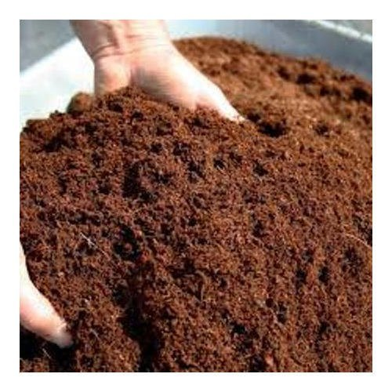

Coco - Peat
Vermicompost (vermi-compost) is the product of the decomposition process using various species of worms, usually red wigglers, white worms, and other earthworms, to create a mixture of decomposing vegetable or food waste, bedding materials, and vermicast. This process is called vermicomposting, with the rearing of worms for this purpose is called vermiculture.
| Packing Available |
| 5 Kg, 10 Kg, 50 Kg |